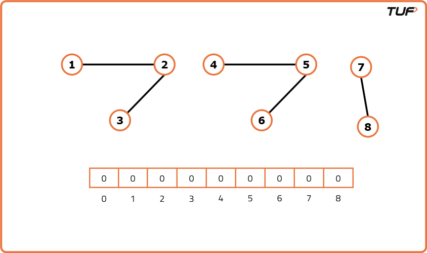
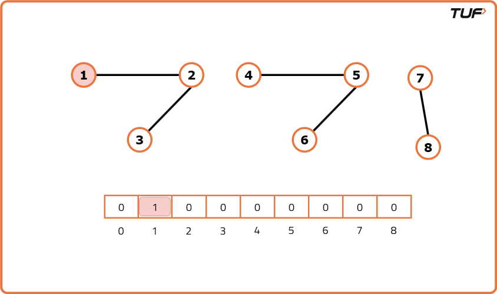
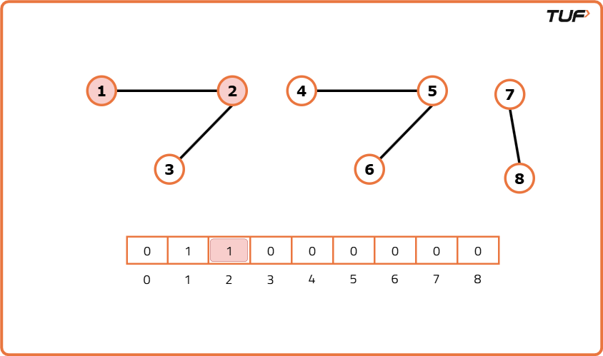
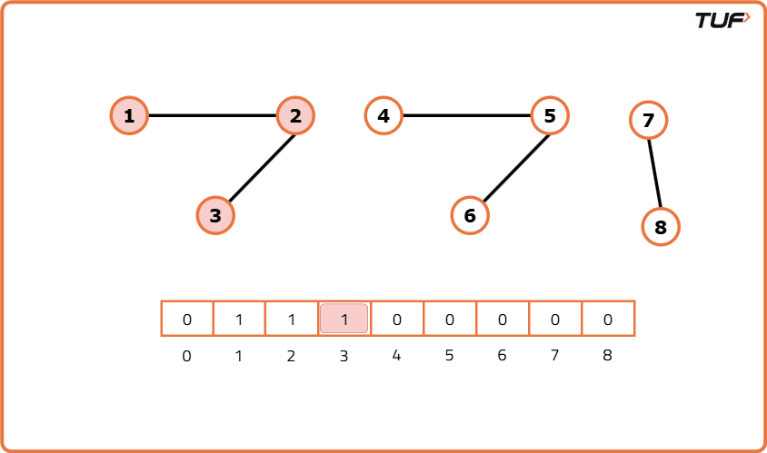
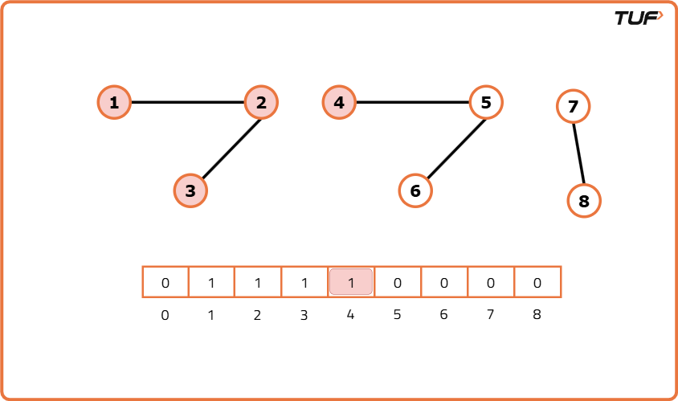
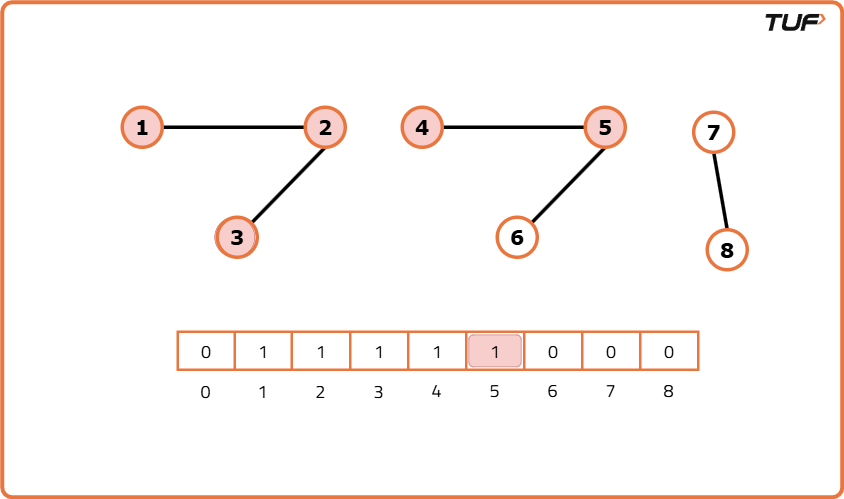
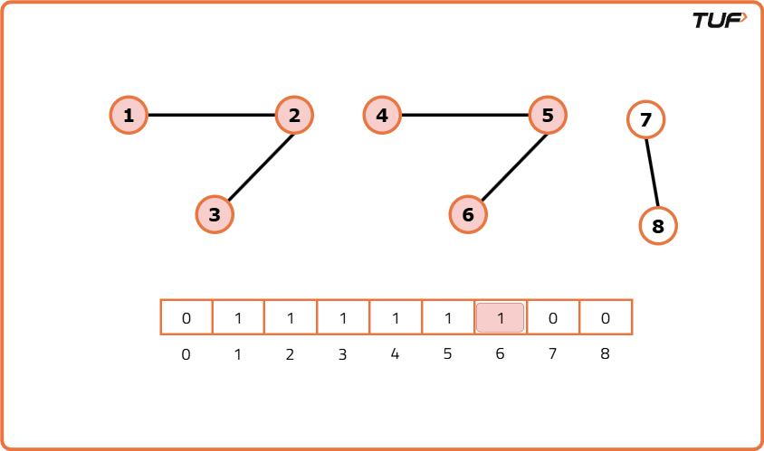
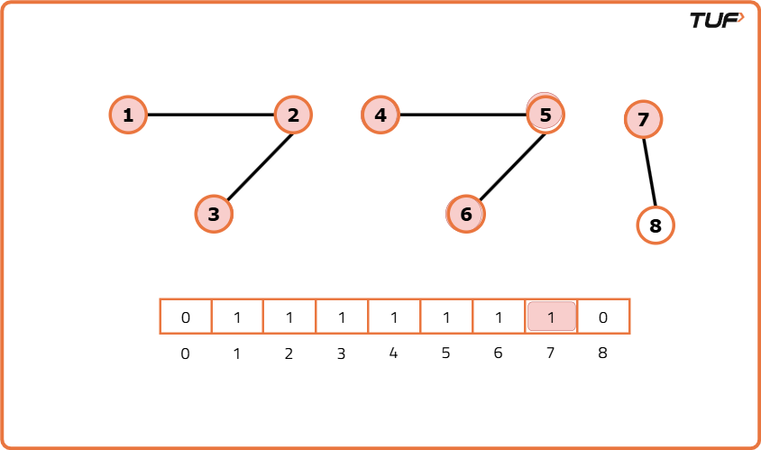
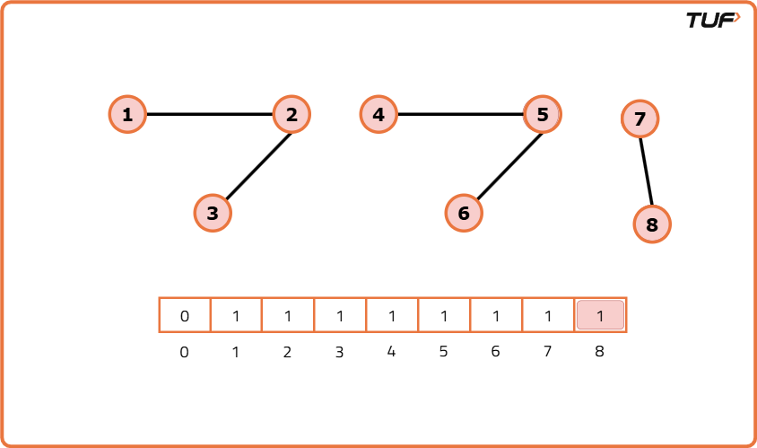
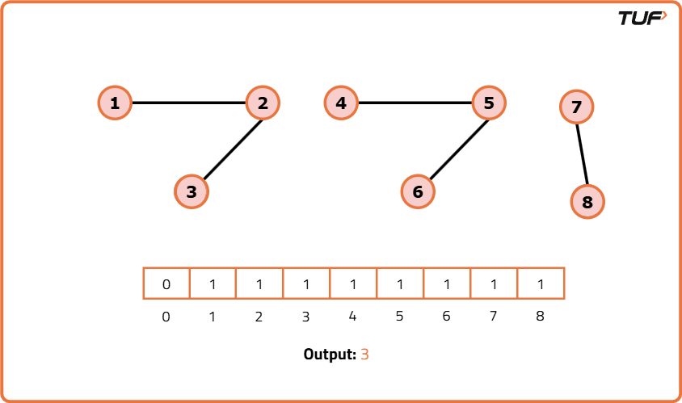

Number of Provinces
Problem Statement: Given an undirected graph with V vertices. Two vertices u and v belong to a single province if there is a path from u to v or v to u. Find the number of provinces. The graph is given as an n x n matrix adj where adj[i][j] = 1 if the ith city and the jth city are directly connected, and adj[i][j] = 0 otherwise.
Examples
Input: adj=[ [1, 0, 0, 1], [0, 1, 1, 0], [0, 1, 1, 0], [1, 0, 0, 1] ] Output: 2 Explanation: In this graph, there are two provinces: [1, 4] and [2, 3]. City 1 and city 4 have a path between them, and city 2 and city 3 also have a path between them. There is no path between any city in province 1 and any city in province 2. Input: adj= [ [1, 0, 1], [0, 1, 0], [1, 0, 1] ] Output: 2 Explanation : The graph clearly has 2 Provinces [1,3] and [2]. As city 1 and city 3 has a path between them they belong to a single province. City 2 has no path to city 1 or city 3 hence it belongs to another province.
Disclaimer: Here is the practice link to help you assess your knowledge better. It's highly recommend trying to solve it before looking at the solution.
Approach
Algorithm
A province is a group of directly or indirectly connected cities and no other cities outside of the group. That means, if we traverse from any one city then we can reach to all the cities in that province.
We know about both the traversals, Breadth First Search (BFS) and Depth First Search (DFS). We can use any of the traversals to solve this problem because a traversal algorithm visits all the nodes in a graph. In any traversal technique, we have one starting node and it traverses all the nodes in the graph. Suppose there are ‘N’ number of provinces so we need to call the traversal algorithm ‘N‘ times, i.e., there will be ‘N’ starting nodes. Hence, we just need to figure out the number of starting nodes.
We know about both the traversals, Breadth First Search (BFS) and Depth First Search (DFS). We can use any of the traversals to solve this problem because a traversal algorithm visits all the nodes in a graph. In any traversal technique, we have one starting node and it traverses all the nodes in the graph. Suppose there are ‘N’ number of provinces so we need to call the traversal algorithm ‘N‘ times, i.e., there will be ‘N’ starting nodes. Hence, we just need to figure out the number of starting nodes.
- Create a visited array to keep track of all the cities that are visited.
- Run a loop from 0 to N, and call the DFS for the every unvisited node.
- DFS function call will make sure that it starts the DFS call from that unvisited node, and visits all the nodes that are in that province, and at the same time, it will also mark them as visited.
- Keep repeating these steps, for every node that you find unvisited, and visit the entire province.
- Add a counter to count the number of times the DFS function is called, as in this way we can count the total number of starting nodes, which will give us the number of provinces.










Code
#include <bits/stdc++.h>
using namespace std;
// Solution class to hold the main logic
class Solution {
private:
// Function to perform DFS traversal
void dfs(int node, vector<int> adjList[], int visited[]) {
// Mark current node as visited
visited[node] = 1;
// Visit all adjacent unvisited nodes
for (auto neighbor : adjList[node]) {
if (!visited[neighbor]) {
dfs(neighbor, adjList, visited);
}
}
}
public:
// Function to count number of connected components
int numProvinces(vector<vector<int>> adj, int V) {
// Create adjacency list from adjacency matrix
vector<int> adjList[V];
// Convert matrix to list
for (int i = 0; i < V; i++) {
for (int j = 0; j < V; j++) {
// Ignore self-loops
if (adj[i][j] == 1 && i != j) {
adjList[i].push_back(j);
adjList[j].push_back(i);
}
}
}
// Array to keep track of visited nodes
int visited[V] = {0};
// Count of connected components
int count = 0;
// Traverse all nodes
for (int i = 0; i < V; i++) {
// If node is not visited
if (!visited[i]) {
// Perform DFS and increment count
count++;
dfs(i, adjList, visited);
}
}
// Return final count
return count;
}
};
// Main function to drive the program
int main() {
// Adjacency matrix input
vector<vector<int>> adj = {
{1, 0, 1},
{0, 1, 0},
{1, 0, 1}
};
// Number of vertices
int V = 3;
// Create object of Solution
Solution obj;
// Call the function and print result
cout << obj.numProvinces(adj, V) << endl;
return 0;
}Complexity Analysis
Time Complexity: O(V+E), we visit every node and for every node we visit all of its neighbours in the DFS traversal.Space Complexity: O(N), for storing visited array and auxiliary stack space.